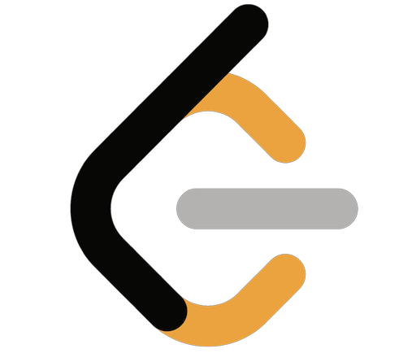
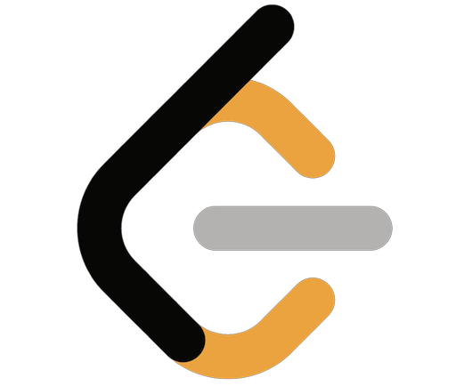
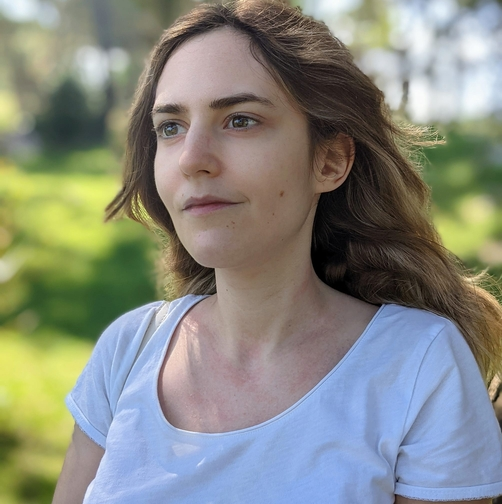

Catalina Hasnas
Frontend Developer
Timisoara, Romania
Technologies and languages
- Languages and frameworks:
- Javascript, Typescript, React, Nextjs, Nodejs, CSS, HTML
- Technologies and tools:
- Git, MongoDB, PostgreSQL, GraphQL, CircleCi
- Other:
- Accessibility, SEO, Core Web Vitals, unit and integration testing
- Spoken languages:
- Romanian - Native, English - Fluent
Work experience
ExtensityAI
Software developer
ExtensityAI is a company specializing in neuro-symbolic AI research and automation, aiming to solve complex business and research challenges by combining deep learning with human-like reasoning.
- Text Editor and Paper Generation: Developed a text editor with markdown support for academic writing, enabling automated paper generation and iterative regeneration based on user feedback and assets;
- Research Platform: Developed an integrated system for searching research papers, managing references and citations, and enabling AI-powered insights through RAG-based interactive Q&A functionality;
- Speech-to-Speech RAG System: Implemented a RAG system for speech-to-speech interactions, managing audio playback, recording, and transmission through WebSockets.
- Custom Design System: Developed and implemented a custom design system based on Figma prototypes;
- User Authentication: Enabled secure user authentication functionality using Supabase.
OPSWAT
Backend Developer
Cybersecurity company that develops products that focus on threat prevention and process creation for secure data transfer and safe device access
- Testing Configuration: Configured Jest for testing, set test coverage goals, and added tests for core features;
- TypeScript Integration: Migrated the API gateway and incorporated TypeScript;
- Code Quality Tools: Upgraded ESLint and initiated the integration of Prettier using an "improve as you go" strategy;
- API Request Throttling: Implemented throttling of API requests based on license type;
- Optimization and Caching: Implemented API endpoint pagination with Redis caching to enhance data retrieval efficiency.
OSINT for Ukraine
Open Source Project Maintainer
Non-profit specialising in open-source investigations and international law
AMDARIS
Frontend Developer
Outsourcing company where I've had the opportunity to work on three client projects, adapting to diverse technologies and ways of working.
- Robert Walters: Customer relationship management solution for a recruitment company
- Berry's Coaches: Online booking of bus tickets and admin panel
- Pearson: E-learning platform for students and teachers
- Agile Team Collaboration: Contributed to feature design, testing, and implementation within Agile Scrum teams;
- Feature Development: Developed features such as an email system using the Outlook API, a custom billing system, and dynamic forms with complex validation;
- API Migration: Migrated the frontend from using GraphQL to REST API;
- Dependency Management: Upgraded and updated npm packages to maintain up-to-date and secure dependencies;
- Technical Debt Management: Established and enforced coding standards, addressing technical debt through rule configurations and project-wide refactoring;
- Technical Debt Management: Improved coding standards by addressing technical debt such as enabling rules;
- Deployment: Collaborated with backend and infrastructure teams to ensure seamless deployments across multiple environments.
Mentorship
Frontend Mentor
Non-profit dedicated to supporting and promoting women in IT
- Mentor two mentees in frontend web development;
- Set up a personalised roadmap that focuses on the fundamentals and modern practices;
- Set up weekly training sessions and code reviews;
Education
Babes Bolyai University
Bachelor's degree
Administrative Sciences
My favorite subject was statistics, because it demonstrated the potential of software like IBM SPSS for data analysis, sparking my interest in programming. Using IBM SPSS Software for statistics improved my analytical thinking. It introduced me to variables of different types, showing how they could be grouped, transformed, and operated upon.